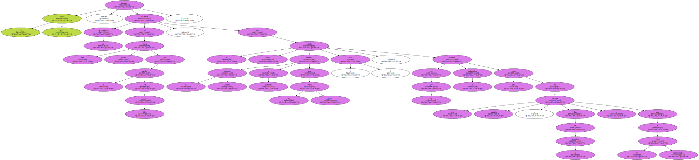
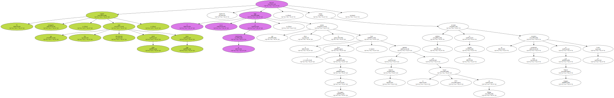
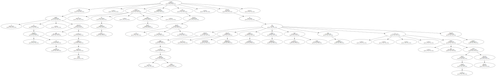
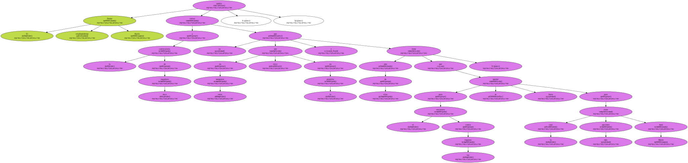
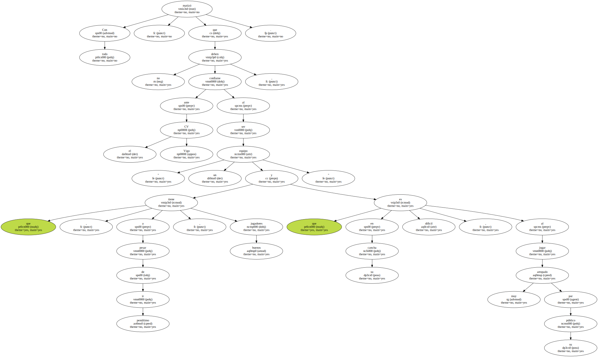
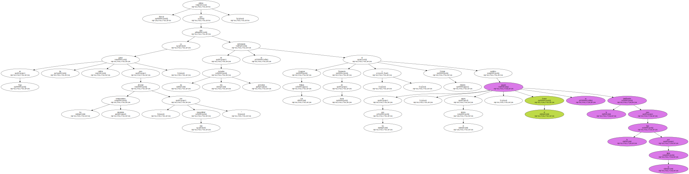
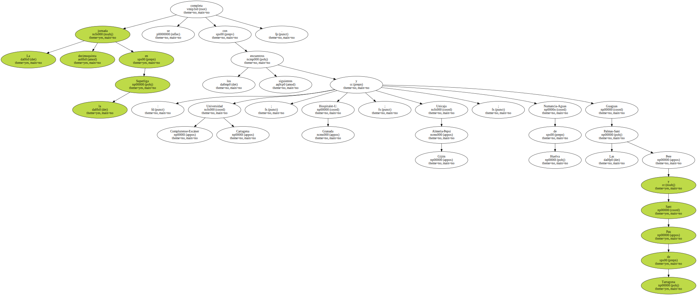

El Ivesur PTV intentará mañana confirmar su recuperación con una nueva victoria en la cancha del CV Vigo , tras el claro triunfo obtenido el pasado miércoles a domicilio ante el Pepsi Gijón ( 0-3 ) , con el que los malagueños cortaron una racha de tres derrotas seguidas , dos en la Superliga y una en la Copa Confederación.
El conjunto malagueño , que viajó hoy directamente desde Gijón hasta Vigo , buscará igualmente el tercer lugar en la clasificación , que ahora lo ostenta el Sant Pere y Sant Pau de Tarragona , igualado a diez victorias con el Ivesur PTV de Málaga , aunque los catalanes afrontan en esta jornada un encuentro muy complicado en Las Palmas frente al Guaguas.
Para el partido en el pabellón de Coia , que empezará a las 18.00 horas , el técnico del Ivesur PTV , Paco Hervás , seguirá contando con la mayoría de sus efectivos , Después de que en la última jornada pudieran jugar el estadounidense Keenan Whiterhurst , Alexis Valido , Pedro Bonache , Juan Carlos Vega , Juan Marín y Alejandro Vadnov , que durante la semana habían tenido diversas molestias.
El estadounidense Donny Harris podría volver a la convocatoria de doce jugadores , ya que en estos momentos son trece en la plantilla y para el encuentro contra los vigueses uno de ellos se tiene que quedar fuera , para lo cual tiene más opciones Juan Marín.
El técnico malagueño comentó hoy que el partido con el Gijón les ha devuelto a la normalidad , ya que " fue una victoria muy importante para volver a coger la confianza que le faltaba al equipo ".

Con todo , matizó que no deben confiarse ante el CV Vigo , al ser " un equipo que , a pesar de ir penúltimo , tiene buenos jugadores y que en su cancha es difícil , al jugar muy arropado por su público ".
Hervás piensa que ganar en Vigo les valdría para afrontar los siguientes compromisos " con más tranquilidad " , ya que en las tres próximas jornadas se enfrentarán al Guaguas Las Palmas , Numancia de Soria y Unicaja Almería , partidos en los que , según el técnico , el Ivesur se jugará la clasificación para la fase por el título.
La jornada decimoquinta en la Superliga se completa con los siguientes encuentros : Universidad Complutense-Escáner Cartagena ; Hospitalet-U. Granada ; Unicaja Almería-Pepsi Gijón ; Numancia-Aguas de Huelva y Guaguas Las Palmas-Sant Pere y Sant Pau de Tarragona.
